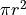

Lezione 3.2 - Soluzioni
Esercizi
Creare alcune variabili, controllando ad ogni passaggio che valore e tipo siano corretti (usando
printetype):aebcon valore12e23come interi.xeycon valore21e14come razionali.
Usando
print(una sola volta), stampare:Tutte le variabili di cui sopra sulla stessa riga.
Tutte le variabili di cui sopra, separate da
;, sulla stessa riga.Il testo “il prodotto di
aebe’a * b”, sostituendo ada,bea * bi valori delle variabili.
Determinare valore e tipo di:
Il prodotto di
aeb.Il quoziente di
xey.Il quoziente intero di
aeb.Il quoziente intero di
xey.Il prodotto di
bey.2elevato a0.2elevato a1.2.2elevato a-2.La radice quadrata di
4.La radice quadrata di
2.
Che differenza c’e’ tra:
10 / 1210 / 12.010 // 1210 // 12.0
Che differenza c’e’ tra:
10 % 310 % 3.0
Usando
pi = 3.141592e dator = 2.5, calcolare:La circonferenza di raggio
r: .L’area di un cerchio di raggio
r: .Il volume di una sfera di raggio
r: .
.
Creare due variabili
a = 100eb = True. Usando un numero opportuno di variabili ausiliarie (chiamatele come volete!), fate in modo che il valore diafinisca inbe che quello dibfinisca ina.(Scrivere
a = Trueeb = 100non vale!)Si puo’ fare con una sola variabile ausiliaria?
Sullo stesso strand di DNA si trovano due geni. Il primo include i nucelotidi dalla posizione 10 alla posizione 20, il secondo quelli dalla posizione 30 alla posizione 40. Scriviamo queste informazioni cosi’:
gene1_inizio, gene1_fine = 10, 20 gene2_inizio, gene2_fine = 30, 40
Data una variabile
posche rappresenta una posizione arbitraria sullo strand, scrivere dei confronti per verificare se:possi trova nel primo gene.possi trova nel secondo gene.possi trova tra l’inizio del primo gene e la fine del secondo.possi trova tra l’inizio del primo gene e la fine del secondo, ma in nessuno dei due geni.possi trova prima dell’inizio del primo gene o dopo la fine del secondo.poscade in uno dei due geni.posnon dista piu’ di 10 dall’inizio del primo gene.
Date le tre variabili Booleane
t,u, ev, scrivere delle espressioni che valgonoTruese e solo se:t,u,vtutte e tre vere.te’ vera oppureue’ vera, ma non entrambe.Esattamente una delle tre variabili e’ falsa.
Esattamente una delle tre variabili e’ vera.
Soluzioni
Soluzioni:
a = 12 b = 23 print(a, b) print(type(a), type(b)) # int, int x = 21.0 y = 14. print(x, y) print(type(x), type(y)) # float, float
Soluzioni:
print(a, b, x, y) print(a, ";", b, ";", x, ";", ...)
Soluzioni:
# casi semplici: prodotto = a * b # int * int print(prodotto) print(type(prodotto)) # int # divisione e divisione intera tra vari # tipi di numeri: quoziente = x / y # float / float print(quoziente) print(type(quoziente)) # float risultato = a // b # int // int print(risultato) print(type(risultato)) # int risultato = x // y # float // float print(risultato) print(type(risultato)) # float risultato = b * y # int * float print(risultato) print(type(risultato)) # float # qui il tipo e' determinato automaticamente # in base alla magnitudine del risultato: risultato = 2**0 # int**int print(risultato) print(type(risultato)) # int risultato = 2**1.2 # int*float print(risultato) print(type(risultato)) # float risultato = 2**-2 # int*int print(risultato) print(type(risultato)) # *** float!!! *** risultato = 4**0.5 # int*float print(risultato) print(type(risultato)) # float risultato = 2**0.5 # int*float print(risultato) print(type(risultato)) # float
Soluzioni:
>>> print(10 / 12) 0.8333333333333334 >>> print(10 / 12.0) 0.8333333333333334 >>> print(10 // 12) 0 >>> print(10 // 12.0) 0.0
Come si vede la divisione intera si comporta normalmente rispetto ai tipi: quando la applico ai due float il risultato e’ quello della divisione normale, ma troncato all’intero
0.Soluzioni:
>>> 10 % 3 1 >>> 10 % 3.0 1.0
Come si puo’ vedere,
%ritorna il resto di10 / 3:10 = 3*3 + 1 # ^ # il resto
Il tipo degli operandi non influenza il valore del risultato, solo il suo tipo.
Soluzione:
pi = 3.141592 r = 2.5 circonferenza = 2 * pi * r print(circonferenza) area = 2 * pi * r**2 print(area) area = 2 * pi * r * r print(area) volume = (4.0 / 3.0) * pi * r**3 print(volume)
Soluzione:
a, b = 100, True a2 = a b2 = b b = a2 a = b2 print(a, b)
oppure:
a, b = 100, True x = a a = b b = x print(a, b)
Soluzione:
gene1_inizio, gene1_fine = 10, 20 gene2_inizio, gene2_fine = 30, 40 # disegnino: # # 5' 3' # ~~~~~xxxxxxxx~~~~~xxxxxxx~~~~~> # 10 20 30 40 # \______/ \_____/ # gene_1 gene_2 # due alternative condizione_1 = (10 <= pos <= 20) condizione_1 = (pos >= 10 and pos <= 20) condizione_2 = (30 <= pos <= 40) condizione_3 = (10 <= pos <= 40) # due alternative condizione_4 = condizione_3 and not (condizione_1 or condizione_2) condizione_4 = (20 <= pos <= 40) condizione_5 = pos < 10 or pos > 40 # occhio che: # # pos < 10 and pos > 40 # # non ha senso: e' sempre False! condizione_6 = condizione_1 or condizione_2 condizione_7 = (0 <= pos <= 20)
Il codice va testato con diversi valori di
posizione, in modo da controllare che le condizioni si comportino come vogliamo: che sianoTruequando la posizione soddisfa i requisiti della domanda, eFalsealtrimenti.Soluzione:
tutte_e_tre = t and u and v t_oppure_u_ma_non_tutte_e_due = (t or u) and not (t and u) # NOTA: qui i backslash alla fine delle righe servono # per andare "a capo", potete ignorarli. una_delle_tre_falsa = \ (t and u and not v) or \ (t and not u and v) or \ (not t and u and v) una_delle_tre_vera = \ (t and not u and not v) or \ (not t and u and not v) or \ (not t and not u and v)
Di nuovo, il codice va testato usando diversi valori per
t,uev. Ci sono 8 combinazioni in tutto:t, u, v = False, False, False t, u, v = False, False, True t, u, v = False, True, False t, u, v = False, True, True # ...